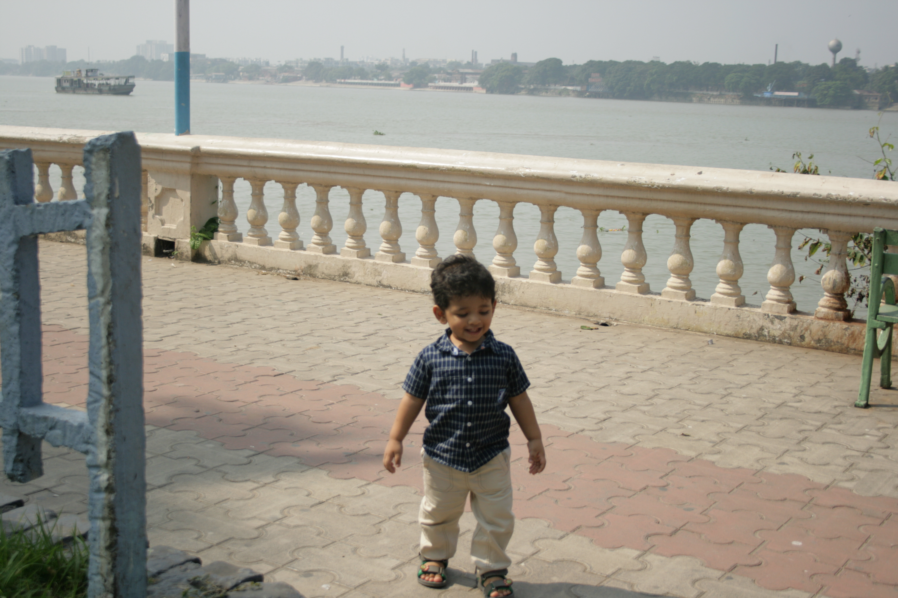
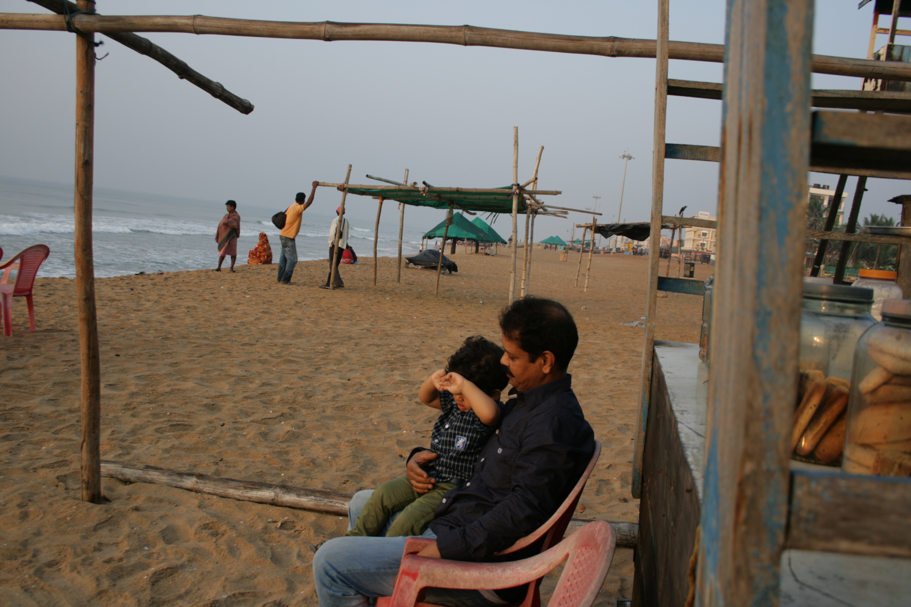

MY PROFILE
I was born on the fourth of April in 2014 in ILS Hospital, Agartala, Tripura, India, Asia. I had my first photo taken by my father.
I went to my home in 79 Tilla in 07/04/2014. My house is a part of Block IV in Grid Electrical Substation in 79 Tilla, GB Baxaar.
At 1 years old I had a party at my house. It was magnificent. All relatives and neighbours came to that charming pretty little
birthday party.

At 1 & half years my family travelled to Calcutta in West Bengal. We saw the Victoria Memorial, the Howrah Bridge and the Ganges River.
There are other sights in Calcutta, like the Alipore Zoo, Indian Museum, Fort William and Botanical Gardens, but we did not
see them. At Howrah, I kept running, falling, getting up and running again at the sight of the train.

My family travelled to Puri Beach in Calcutta. There was lots of sand, roaring waves of the sea and lots of fishermen at Puri.
When standing on the beach, I lost balance and fell down onto the powdery sand.
After that I absolutely refused to walk in the seabeach sand.
But the day before we would be returning to Agartala, I actually walked on the beach without crying.

For my third Birthday Anniversary, my family travelled to Gangtok in Sikkim. I loved to be in Sikkim. We travelled around Lachung, Yumthang Valley at North Sikkim
My parents had a snowball fight there.